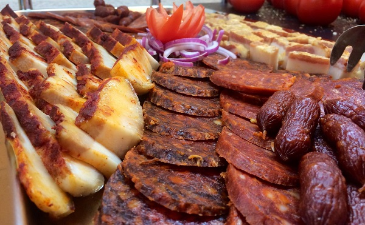
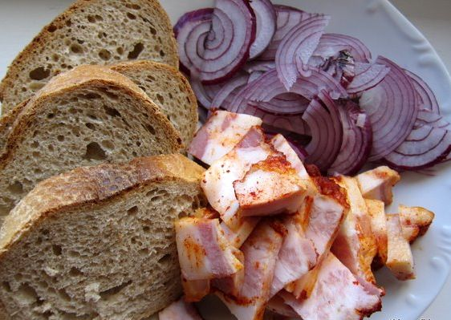
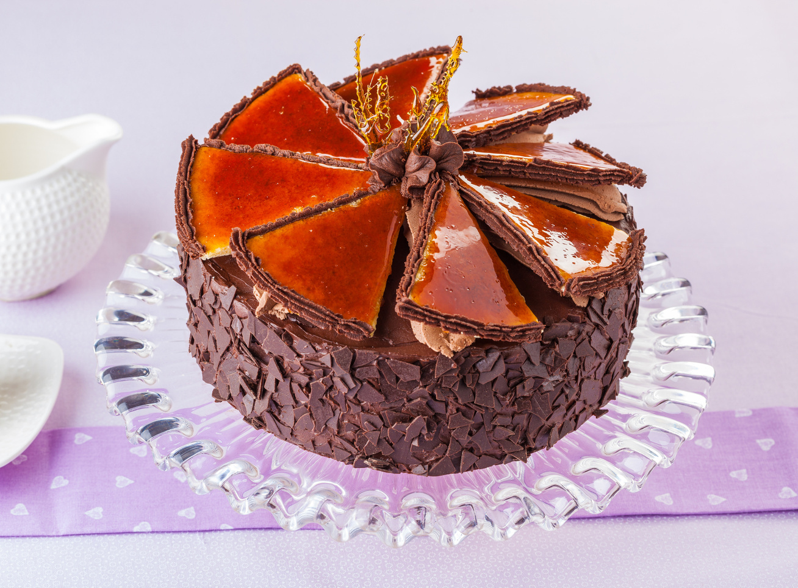

Magyarország gasztronómiája – Egy ízes utazás paprikával, zsírral és lélekkel

Ha Magyarországra gondolunk, az első dolgok között biztosan felvillan a paprika, a gulyás és az a bizonyos disznótoros hangulat, ami már az illatával is képes felébreszteni a falusi nagymamák kollektív emlékét. De a magyar gasztronómia több, mint zsíros kenyér lilahagymával – bár kétségkívül az is egy nemzeti kincs. Ez egy olyan világ, ahol a lecsó nem tréfadolog, a túrós csusza sorsa nem lehet tréfás, és ahol az étel nem csak táplál, de társadalmi eseménnyé is válik.
A magyar konyha lelke a fűszerpaprika. Ez nem egyszerű por, hanem szent ereklye. Ha magyar háztartásban jársz, jó eséllyel találsz egy minimum 5 dekás pirospaprika-tartalékot a polcon, de a profik inkább kilóban gondolkodnak. A paprika nem csak ízesít, hanem színez, összeköt, és néha meg is könnyeztet – különösen, ha véletlenül az erőset használtad.
Gulyás, pörkölt, paprikás – a szentháromság
Magyarország konyhája nem létezhet a híres gulyásleves nélkül. Ami egyébként nem pörkölt, és nem is paprikás, hanem valahol félúton, de a külföldiek gyakran összekeverik. Ez persze megbocsátható – míg nem próbálják meg tejföllel enni. A pörkölt viszont már tényleg komoly dolog: hús, hagyma, paprika, egy kis bor – és türelem. A paprikás hasonló, csak tejföllel turbózva. Egyszerű recept, de annál nagyobb büszkeség.
És persze ne feledkezzünk meg a halászléről sem, ami Karácsonykor kötelező, de nyáron, bográcsban a Tisza-parton az igazi. Ha nem kapsz benne szálkát, az gyanús – a hagyományos magyar halászlé ugyanis egyfajta gasztronómiai kihívás is: „Edd meg, ha tudod (szálka nélkül)!”
A magyar reggeli: kicsi, zsíros, határozott

Nálunk a reggeli nem vicc. Felvágottak, tojásrántotta szalonnával, zöldségek csak alibiből. A kenyér nem lehet túl puha, különben nem viszi el a zsírt. A zsír külön téma: van disznózsír, kacsa- és libazsír is, és mindegyikre esküszik valaki a családból. A lilahagyma pedig nem köret, hanem státuszszimbólum.
A kifli és zsemle nálunk nem csak péksütemény – kulturális örökség. A „rendes” kifli vékony, ropogós, és ha másnap még ehető, akkor valamit elrontottak. Az igazi magyar pékáru másnapra már kemény, mint az élet – de legalább lehet vele diót törni.
Levesek – mert ebéd nem kezdődhet szárazon
A magyar ebédleves nélkül olyan, mint a hortobágyi palacsinta töltelék nélkül: fura. Húsleves, babgulyás, palócleves, korhelyleves – mindegyikben van valami lélekmelegítő. A húsleves gyakran vasárnapi ünnep, csigatésztával vagy eperlevéllel – de csak az igazi veteránok tekerik otthon kézzel.
A korhelyleves külön dicséretet érdemel: ez az a fajta étel, amit az ember nem szomjasan, hanem másnaposan ért igazán. Tejfölös, savanyú, kolbászos – mintha a tested bocsánatot kérne a fejed helyett.
Főételek, amelyek után csak fetrengeni lehet
A magyar konyha nem diétás. Sőt, a fogyókúra kifejezést sem illik kiejteni pörkölt, rakott krumpli vagy töltött káposzta jelenlétében. A töltött káposzta egyébként szinte vallásos tiszteletet élvez, különösen ünnepekkor. Ha jól csinálod, akár három napig is finomabb lesz – ha rosszul, akkor is el kell fogyjon.
A rakott krumpli egy egyszerű népi étel, de ha elég tejfölt teszel rá, már-már művészeti alkotás lesz. Kolbász, tojás, krumpli – és egy kis szeretet. Legalábbis ezt mondjuk, miközben a harmadik tányért merjük magunknak.
Édességek – a cukros csábítás hazája

A magyar desszertek között is igazi legendák vannak. Dobos torta, somlói galuska, rétesek végtelen variációban. A túrós palacsinta és a Gundel palacsinta között zajlik a palacsinták háborúja – de mi, békésen, megeszünk mindkettőt.
A bejgli külön fejezet. Karácsonykor bejgli van – és vita arról, hogy mákos vagy diós a jobb. Az okos háziasszony mindkettőt készíti, hogy aztán egyikből se maradjon semmi januárra.
Italok – mert nem csak az étel fontos
Ha ételről beszélünk, nem hagyhatjuk ki a folyékony kísérőket sem. A pálinka nem csak ital – gyógyír, életelixír és társasági belépő egyben. Egy jó házi barackpálinka olyan, mint egy régi barát: először megnevettet, aztán lehet, hogy sírsz is.
A borvidékeink – Tokaj, Villány, Eger – méltán híresek. A tokaji aszú pedig a „borok királya, királyok bora”, ha hihetünk XIV. Lajosnak. Ha nem, akkor is finom.
Összegzés: Itt nem lehet csak egy kicsit enni
Magyarország gasztronómiája egy bátor, ízekkel teli világ, ahol a hagyomány és a humor kéz a kézben járnak. Itt az étel nemcsak testet, de lelket is táplál. És bár néha kicsit nehéz, kicsit zsíros, néha túl fűszeres, mégis szerethető, mint egy kissé morgós, de melegszívű nagybácsi.
Szóval ha legközelebb Magyarországon jársz, ne diétával jöjj – hanem üres hassal és nyitott szívvel. Mert itt még az ételnek is lelke van.